El Diseño de Bases de Datos es el proceso por el que se determina la organización de una Base de Datos, incluidas su estructura, contenido y las aplicaciones que se han de desarrollar.
El diseño de Base de Datos desempeña un papel central en el empleo de los recursos de información en la mayoría de las organizaciones. El diseño de Base de Datos ha pasado a constituir parte de la formación general de los informáticos, en el mismo nivel que la capacidad de construir algoritmos usando un lenguaje de programación convencional.
Según ha ido avanzando la tecnología de Bases de Datos, se han desarrollado y adaptado las metodologías y técnicas de diseño. Ahora existe un consenso, por ejemplo, sobre la descomposición del proceso en fases, sobre los principales objetivos de cada fase y sobre las técnicas para conseguir estos objetivos.
Así, el diseño de una Base de Datos se descompone en:
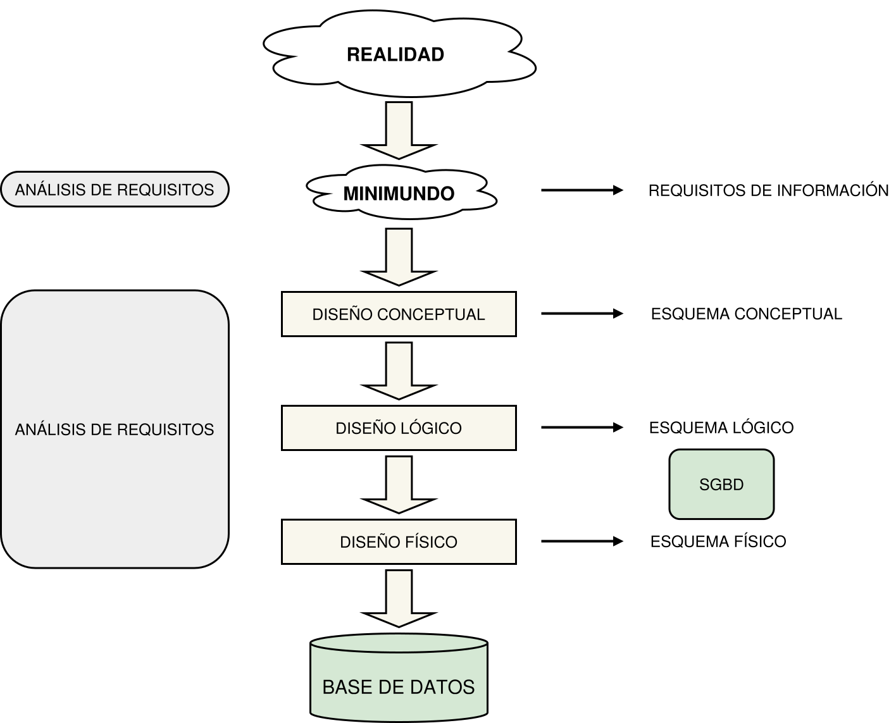
El diseño conceptual parte de las especificaciones de requisitos de usuario y su resultado es el modelo o esquema conceptual de la Base de Datos.
Un esquema o modelo conceptual es una descripción de alto nivel de la estructura de la Base de Datos, independientemente del SGBD que se vaya a utilizar para manipularlo.
Los procesos de definición de requisitos y del diseño conceptual exigen identificar las exigencias de información de los usuarios y representarlos en un modelo bien definido.
El modelo más utilizado actualmente es el Entidad-Relación y será el que trabajaremos durante el curso. Más adelante explicaremos en qué consiste.
El diseño lógico es el proceso de construir un esquema de la información que utiliza la empresa, basándose en un modelo conceptual de base de datos específico, independiente del SGBD concreto que se vaya a utilizar y de cualquier otra consideración física.
En esta etapa, se transforma el esquema conceptual en un esquema lógico que utilizará las estructuras de datos del modelo de base de datos en el que se basa el SGBD que se vaya a utilizar, como puede ser el modelo relacional, el modelo de red, el modelo jerárquico o el modelo orientado a objetos.
La normalización es una técnica que se utiliza para comprobar la validez de los esquemas lógicos basados en el modelo relacional, ya que asegura que las tablas obtenidas, conociendo las entidades, sus atributos y las relaciones, no tienen datos redundantes.
El esquema lógico es una fuente de información para el diseño físico. Además, juega un papel importante durante la etapa de mantenimiento del sistema, ya que permite que los futuros cambios que se realicen sobre los programas de aplicación o sobre los datos, se representen correctamente en la base de datos.
Tanto el diseño conceptual, como el diseño lógico, son procesos iterativos, tienen un punto de inicio y se van refinando continuamente.
Ambos se deben ver como un proceso de aprendizaje en el que el diseñador va comprendiendo el funcionamiento de la empresa/organización y el significado de los datos que maneja.
El diseño conceptual y el diseño lógico son etapas clave para conseguir un sistema que funcione correctamente. Si el esquema no es una representación fiel de la realidad, será difícil o imposible, definir todas las vistas de usuario (esquemas externos) o mantener la integridad de la base de datos. También puede ser difícil definir la implementación física o el mantener unas prestaciones aceptables del sistema.
Además, hay que tener en cuenta que la capacidad de ajustarse a futuros cambios es un sello que identifica a los buenos diseños de bases de datos.
El diseño físico es el proceso de producir la descripción de la implementación de la base de datos en memoria secundaria. Debe especificar:
Para llevar a cabo esta etapa, se debe haber decidido cuál es el SGBD que se va autilizar, ya que el esquema físico se adapta a él.
Entre el diseño físico y el diseño lógico hay una realimentación, ya que algunas de las decisiones que se tomen durante el diseño físico para mejorar las prestaciones, pueden afectar a la estructura del esquema lógico.
En general, el propósito del diseño físico es describir cómo se va a implementar físicamente el esquema lógico obtenido en la fase anterior.
Concretamente, en el modelo relacional, esto consiste en:
Un modelo es una representación de la realidad que contempla sólo los detalles relevantes.
Ejemplo 1
Consideremos una transacción bancaria tal como un depósito en una cuenta corriente, es decir, el ingreso de efectivo de una persona en su cuenta corriente.
El departamento de contabilidad desea conservar ciertos detalles (número de cuenta, importe del depósito, fecha, número del cajero) e ignorar otros (como la conversación mantenida con el personal de caja durante la transacción, la longitud de la cola, la temperatura ambiental dentro del banco, …). La realidad involucra un sin número de detalles, pero el departamento de contabilidad considerará la mayoría de ellos irrelevantes para la transacción.
De este modo, un modelo sólo considerará aquellos detalles que este consideren relevantes. Por supuesto, algunos detalles considerados irrelevantes para un usuario o grupo de usuarios pueden ser relevantes para otros.
Ejemplo 2
La longitud de la cola puede ser interesante para el director del banco en el sentido de contratar a más personas para atender al público. Por tanto, diferentes usuarios o grupos de usuarios pueden tener distintos modelos de la realidad.
Una Base de Datos incorpora un modelo de la realidad. El SGBD gestiona la Base de Datos de modo que cada usuario pueda registrar, acceder y manipular los datos que constituyen su modelo de la realidad. Manipulando los datos, los usuarios pueden obtener la información que les sea útil. Por tanto, los modelos son herramientas poderosas para eliminar los detalles irrelevantes y comprender la realidad de los usuarios individuales.
Para modelar debemos asociar e identificar elementos de la realidad con elementos del modelo. Si esta asociación se hace correctamente, entonces el modelo se puede usar para resolver el problema. De lo contrario, el modelo probablemente conducirá a una solución incompleta o incorrecta.
El modelo Entidad-Relación es un modelo conceptual de datos orientado a entidades. Se basa en una técnica de representación gráfica que incorpora información relativa a los datos y las relaciones existentes entre ellos, para darnos una visión del mundo real, eliminando los detalles irrelevantes.
El modelo Entidad-Relación (ER) fue propuesto por Peter Chen en 1976 en un artículo muy famoso: The Entity-Relationship Model: Toward a Unified View of Data.
Según Chen:
El Modelo Entidad-Interrelación puede ser usado como una base para una vista unificada de los datos, adoptando el enfoque más natural del mundo real que consiste en entidades y relaciones (interrelaciones).
Posteriormente, otros autores han ampliado el modelo (modelo Entidad-Relación extendido), con importantes aportaciones, formándose en realidad una familia de modelos.
Este tema describe el Modelo Entidad-Relación, sin discriminar de manera detallada los elementos originales y los extendidos. El objetivo es disponer de un buen modelo para representar datos de cara a diseñar bases de datos.
Características del modelo
Las principales características son:
Elementos del modelo
Los elementos básicos del modelo E-R original son:
A lo largo de este tema describiremos esos elementos básicos.
Entidad es cualquier objeto (real o abstracto) que existe en la realidad y acerca del cual queremos almacenar información en la BD.
Entidad es algo con realidad objetiva que existe o puede ser pensado (Hall, 1976)
Las entidades poseen unas características (predicado asociado) que todos sus elementos, ejemplares o instancias cumplen. Las entidades se representan gráficamente mediante rectángulos con su nombre en el interior.
Ejemplo de entidad PROFESOR
La entidad PROFESOR, cuyo predicado asociado es persona que enseña una materia, tiene un ejemplar Juana que pertenece a esa entidad, ya que cumple dicho predicado.
Ejemplo de entidad MATERIA
MATERIA es una entidad.
Gestión de Bases de Datos, Inglés y Física son instancias de la entidad MATERIA.
Ejemplo de entidad POBLACION
POBLACION es una entidad.
Jerez, Barcelona, Jimena y Mérida son ocurrencias de la entidad POBLACION.
Los atributos son cada una de las propiedades o características que tiene una entidad.
Los atributos se representan mediante un óvalo con el nombre del atributo dentro.
Clasificación de los atributos
Los atributos pueden clasificarse por diferentes criterios de manera no excluyente en:
Identificadores: son atributos que identifican de manera unívoca cada ocurrencia de una entidad. Toda entidad debe tener al menos un atributo identificador. Los atributos se representan subrayando el nombre del atributo. No utilizamos ninguna nomenclatura para los atributos que no son identificadores, simplemente los calificamos como no identificadores.
Como ejemplo se muestra como se rpresentaría un atributo identificador de nombre dni.
Identificador primario e identificadores alternativos: Una entidad puede tener más de 1 atributo identificador; en ese caso, elegimos un atributo como identificador primario (P), quedando el resto como identificadores alternativos (A).
Ejemplo de identificadores alternativos
En este ejemplo, tanto el dni como el número de la seguridad social (nss) son atributos identificadores. Si elegimos el dni como identificador primario lo indicamos con una (P) y el nss con una (A) indicando que es un identificador alternativo. Si hubiéramos optado por elegir el nss como identificador primario y el nss como alternativo también sería correcto.
Simples y compuestos
Simples: son atributos que no están formados por otros atributos. Por ejemplo el atributo peso se representa así:
Compuestos: son atributos que están formados por otros atributos que a su vez pueden ser simples o compuestos. Por ejemplo el atributo direccion es un atributo compuesto que está formado por los atributos: calle, piso y puerta.
Monovaluados y multivaluados
Monovaluados: son atributos que representan un solo valor para una determinada ocurrencia de una entidad en un momento determinado. Pueden ser simples o compuestos. Se muestra, de nuevo, el atributo simple peso:
Multivaluados: son atributos que pueden representar varios valores simultáneamente para una misma ocurrencia de una entidad. Se representan mediante un doble óvalo. Por ejemplo telefono es un atributo multivaluado.
Calculados (o derivados): son atributos cuyo valor se obtiene aplicando una fórmula (normalmente a partir del valor de otros atributos). Son atributos que a la postre no se almacenarán en la base de datos.
Su valor se obtendrá en el momento en que sea necesario aplicando la fórmula asociada a ellos. Por ejemplo, la edad se calcula a partir de la fecha de nacimiento y la fecha actual.
En el diccionario de datos debe especificarse esta fórmula o método para calcular su valor. Se representan en un diagrama ER mediante un óvalo con línea discontinua. El diagrama muestra la representación del atributo calculado edad.
Propios: son los atributos de las relaciones. Se representan unidos a un rombo que simboliza la relación.
Ejemplo de atributos propios
En el siguiente ejemplo tenemos una relación entre las entidades CLIENTES y PRODUCTOS llamada COMPRAR puesto que los clientes compran productos. El atributo cantidad depende de las dos entidades simultáneamente y por lo tanto es un atributo de la relación COMPRAR.
Cardinalidades de atributos
Para cada atributo de una entidad se puede especificar una cardinalidad (min,max); la cual indicará cuantos valores puede almacenar el atributo para una ocurrencia determinada de la entidad.
Por defecto (si no ponemos nada), la cardinalidad de un atributo asociado a una entidad es (1,1); es decir, el atributo debe obligatoriamente tener exactamente un valor para toda ocurrencia de la entidad.
Pondremos como cardinalidad de atributo (0,1) si queremos indicar que un atributo puede contener un valor nulo (NULL).
Para atributos compuestos, si no especificamos nada, entonces es obligatorio que tengan valor todos sus atributos componentes. Si especificamos una cardinalidad para un atributo compuesto pero no para los atributos componentes, entonces todos los atributos componentes heredan esa cardinalidad. Por ejemplo: si pusiéramos (0,1) como cardinalidad del atributo direccion visto anteriormente, entonces todos sus componentes podrían contener un valor nulo.
Para atributos multivaluados la cardinalidad por defecto es (1,n), aunque se puede especificar un rango finito. Por ejemplo: para el atributo multivaluado telefono podemos decir que su cardinalidad es (0,3), y de esta manera indicamos que una persona puede tener de 0 a 3 teléfonos como máximo.
Un dominio es un conjunto de valores homogéneos con un nombre que lo identifica.
Cada atributo simple de una entidad está asociado a un dominio, el cual representa el conjunto de valores que puede tomar el atributo.
Para cada ocurrencia de una entidad un atributo tendrá un valor perteneciente al dominio del atributo.
Ejemplo Dominios
Ejemplo de los dominios de los campos de una tabla de EMPLEADOS.
| Atributo | Dominio | Descripción |
|---|---|---|
| FECHA DE ALTA | Día del Calendario | Indica cuando se introdujo el registro en la BD. |
| TELEFONO | Conjunto de números | Puedes ser tanto un número fijo como un número móvil, pero será siempre de España,es decir, no es necesario almacenar el prefijo del país porque todos tendrán el +34. |
| COBRO DE INCENTIVOS | SI/NO | Indica si esta persona cobra incentivos. |
| ALTURA | 0 - 300 | Indica los cm de altura de la persona. |
Los dominios se especificarán en el diccionario de datos.
Es necesario también especificar el tipo, formato, la unidad o los valores correspondientes. El formato se puede especificar mediante el uso de expresiones regulares.
Ejemplo Dominios y formatos
Ejemplo de especificación del dominio y formato de los campos mediante expresiones regulares para una tabla de PERSONAS.
| Atributo | Dominio | Formato | Unidad | Valores o fórmulas |
|---|---|---|---|---|
| DNI | Cadena(9) | [0-9]+[A-Z] | ||
| NOMBRE | Cadena(30) | [A-Za-z] | ||
| APELLIDO | Cadena(40) | [A-Za-z] | ||
| PESO | Número | [0-9] | Kg | |
| ALTURA | Número | [0-9] | cm | |
| TIPO_TELF | Cadena(5) | [A-Z] | FIJO, MÓVIL, FAX | |
| TELEFONO | Número | [0-9] | ||
| EDAD | Número | [0-9] | Años | Fecha hoy – FechaNacimiento |
Relación (interrelación, vínculo) es una correspondencia o asociación entre 2 o más entidades.
Las relaciones se representan gráficamente mediante rombos y su nombre aparece en el interior. Normalmente son verbos o formas verbales. Por ejemplo la relación COMPRAR asocia las entidades CLIENTES y PRODUCTOS y el modelo entidad-relación correspondiente a este supuesto sería el siguiente:
Hay varios aspectos que hay que considerar en las relaciones como las entidades que participan en las relaciones y de qué manera lo hacen.
Este es un tema bastante extenso que merece ser tratado en una sección aparte.
A continuación detallamos una serie de conceptos y aspectos relativos a las relaciones en el modelo Entidad-Relación.
Grado de una relación es el número de entidades que participan en la relación.
Decimos que una relación tiene grado n si participan n entidades en la relación.
Según el grado de la relación, las relaciones más habituales se denominan:
La relaciones de grado mayor de 3 son muy poco frecuentes. Si en nuestro modelo entidad-relación aparecen este tipo de relaciones puede ser síntoma de un diseño incorrecto y hay que revisar nuestro modelo para cerciorarse de que el diseño es correcto.
La cardinalidad de una relación es el número de ocurrencias de una entidad asociadas a una ocurrencia de otra entidad.
La cardinalidad se representa mediante unos símbolos que se colocan sobre las líneas que unen las entidades con la relación. Estos símbolos son: el número 1 y una serie de letras del alfabeto como la M, N, P ...
En función del grado de la relación vamos a ver como se representa y se define la cardinalidad.
Relaciones binarias
Desde el punto de vista de la cardinalidad, existen 3 tipos de relaciones o correspondencias:
Para obtener la cardinalidad de una relación, se debe fijar una ocurrencia concreta de una entidad y averiguar cuántas ocurrencias de la otra entidad le corresponden. A continuación, se realiza el mismo proceso en el otro sentido.
Para estudiar cada tipo de relación binaria vamos a suponer que tenemos 2 entidades E1 y E2 unidas mediante la relación R.
También utilizaremos esquemas de tablas y registros como ayuda paraa entender los conceptos. Estos diagramas representan las relaciones entre las ocurrencias de las entidades mediante diagramas de conjuntos (Venn).
Relaciones Uno a Uno (1:1)
A cada ocurrencia de la entidad E1 le corresponde una ocurrencia de la entidad E2, y viceversa.
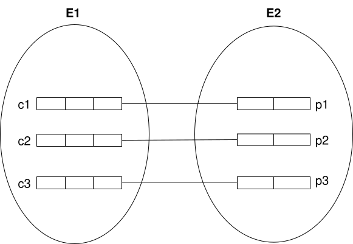
Este tipo de relaciones se presentan cuando tenemos muchos atributos de una entidad y esta entidad se puede descomponer en dos conjuntos de atributos que semánticamente representan conceptos diferentes pero están relacionados biunívocamente.
Ejemplo 1
El siguiente ejeplo muestra la relación entre la entidad PAISES y sus BANDERAS nacionales. Se trata de una relación 1:1 ya que cada país sólo tiene una bandera nacional y no hay banderas repetidas para dos países.
Relaciones Uno a Muchos (1:N)
A cada ocurrencia de la entidad E1 le pueden corresponder varias ocurrencias de la entidad E2. Pero a cada ocurrencia de la entidad E2 sólo le corresponde una ocurrencia de la entidad E1.
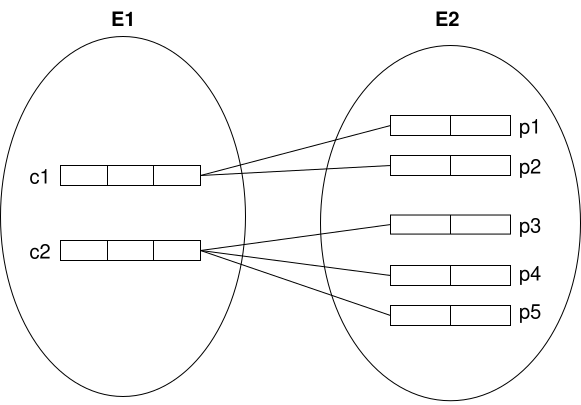
Ejemplo 2
El siguiente ejeplo es un clásico. Este nos muestra la relación entre la entidad EMPLEADOS y DEPARTAMENTOS. Se trata de una relación 1:N ya que en un departamento puede haber más de un empleado y por regla general un empleado sólo pertenece a un departamento.
Relaciones Muchos a Muchos (M:N)
A cada ocurrencia de la entidad E1 le pueden corresponder varias ocurrencias de la entidad E2. Y a cada ocurrencia de la entidad E2 le pueden corresponder varias ocurrencias de la entidad E1.
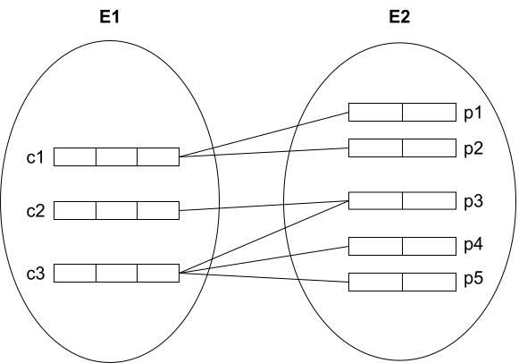
Ejemplo 3
Una universidad lleva a cabo una serie de PROYECTOS con el personal docente e investigador del que dispone. Hay que tener en cuenta que es posible que haya profesores que estén en más de un proyecto a la vez. Claramente el tipo de relación entre la entidad PROFESORES y la entidad PROYECTOS es de tipo M:N.
Relaciones reflexivas
Las relaciones reflexivas son las que relacionan las ocurrencias de una entidad con otras ocurrencias de la misma entidad. Una relación reflexiva se pueden ver como una relacion binaria donde una entidad es una copia de la otra. Adoptando este enfoque podemos razonar de la misma manera que lo hicimos con las entidades binarias para saber con cuantas ocurrencias se relaciona cada ocurrencia de la entidad.
Al igual que en las relaciones binarias, también tenemos relaciones de tipo 1:1, 1:N y M:N.
Relaciones Uno a Uno (1:1)
Cada ocurrencia de la entidad E se relaciona con una sóla ocurrencia de la misma entidad.
Ejemplo 4
El siguiente ejemplo muestra la relación reflexiva GEMELOS entre PERSONAS. Es evidente que es 1:1 ya que una persona sólo puede tener un hermano gemelo (si tiene 2 entonces son trillizos).
Relaciones Uno a Muchos (1:N)
A Cada ocurrencia de la entidad E le pueden corresponder varias ocurrencias de la misma entidad, pero a cada ocurrencia relacionada sólo le corresponde una única ocurrencia (la correspondencia no s simétrica). Al igual que en las binarias, este tipo suele ser el más habitual y, en general, describen relaciones jerárquicas entre los elementos de la misma entidad.
Ejemplo 5
El siguiente ejemplo muestra la relación reflexiva SER_JEFE entre EMPLEADOS. Se trata de una relación jerárquica ya que cada empleado solo tiene un jefe directo (ese jefe también puede tener un jefe).
Relaciones Muchos a Muchos (M:N)
A Cada ocurrencia de la entidad E le pueden corresponder varias ocurrencias de la misma entidad. La correspondencia sí es simétrica en este caso.
Ejemplo 6
El siguiente ejemplo muestra la relación reflexiva HERMANOS. La correspondencia es simétrica; es decir una persona puede tener varios hermanos y uno puede ser hermano de varias personas.
Relaciones ternarias
Son relaciones donde participan 3 entidades. Para obtener la cardinalidad del lado de la entidad E1, fijamos un par de ocurrencias de las otras 2 entidades y vemos con cuantas ocurrencias de la entidad E1 se relacionan. Para calcular las cardinalidades del lado de las entidades E2 y E3 procedemos de forma análoga.
Como cada par de ocurrencias fijadas se puede relacionar con una o varias ocurrencias de la otra entidad (de la que no hemos cogido ocurrencias) podemos tener 4 posibles cardinalidades de la relación: M:N:P, M:N:1, N:1:1 y 1:1:1.
Ejemplo 7
El ejemplo muestra como hay una relación ternaria M:N:P entre las entidades ALUMNOS, ASIGNATURAS y PERIODOS. Además aparece la nota como un atributo propio. La nota significa la nota que ha obtenido un alumno, en una asignatura y en un determinado periodo (1ª evaluación, 2ª evaluación ...).
En la mayoría de los casos, los atributos propios son los que nos ayudan a determinar las relaciones entre entidades. La relación es M:N:P porque:
Cada entidad podrá participar en la relación con un mínimo y un máximo de ocurrencias.
Hasta ahora hemos visto con cuantas ocurrencias de otra entidad se puede relacionar una ocurrencia de una entidad. Esto es lo que se llama la participación máxima de una entidad en la relación.
La participación mínima de una entidad indica el mínimo número de ocurrencias de otra entidad con las que se puede relacionar una ocurrencia de una entidad.
En lo que respecta a la participación mínima, sólo consideraremos los valores 0 y 1; es decir si en una relación es posible que haya una ocurrencia que no se relacione con ninguna de la otra o si necesariamente se tiene que relacionar con al menos una.
Para calcular las cardinalidades mínimas procedemos de forma diferente a como lo hacíamos con las cardinalidades máximas. Supongamos que tenemos una relación R entre 2 entidades E1 y E2. El procedimiento es el siguiente: elegimos una ocurrencia arbitraria de la entidad E1 y nos preguntamos si es posible que esa ocurrencia no se relacione con ninguna ocurrencia de la entidad E2. Si la respuesta es afirmativa, entonces la cardinalidad mínima correspondiente al lado de la entidad E1 es 0; si no, es 1. Para la cardinalidad del lado de E2 procedemos de forma análoga intercambiando los papeles de E1 y E2.
En el modelo relacional de Chen las cardinalidades que aparecen sobre las líneas de las relaciones son las cardinalidades máximas. En este modelo las cardinalidades mínimas con valor cero se representan con un círculo hueco (similar al cero) al lado de la entidad. Si no hay círculo es que la cardinalidad mínima es 1.
En la siguiente imagen se muestra sólo las cardinalidades mínimas de la relación entre dos entidades E1 y E2.
El cero al lado de E1 quiere decir que puede haber ocurrencias de E1 que no se relacionen con ocurrencias de E2. Al lado de E2 no hay ningún cero por lo que obligatoriamente a toda ocurrencia de E2 le corresponde al menos una ocurrencia de E1.
Cuando se muestran las cardinalidades mínimas se puede utilizar una representación alternativa como la mostrada en la imagen:
La primera componente de cada par es la cardinalidad mínima y la segunda la cardinalidad máxima. Es el mismo caso que acabamos de ver; hay un cero en E1 y un 1 en E2. Los valores x e y representan las cardinalidades máximas (x puede ser 1 o M e y 1 o N).
A continuación vamos a ver unos cuantos ejemplos para aclarar los conceptos. En estos ejemplos no se muestran los atributos porque nos vamos a centrar sólo en las relaciones.
Ejemplo 8
Un profesor puede tutorizar a varios alumnos por eso la cardinalidad máxima es N (el símbolo N en el otro extremo, al lado de la entidad ALUMNOS). Además, puede haber profesores que no tutoricen alumnos por lo que la cardinalidad mínima es 0 (la bolita al lado de la entidad PROFESORES).
Por otro lado 1 alumno sólo puede ser tutorizado por un profesor por lo que la cardinalidad máxima es 1. Además, no puede ver alumnos sin tutorizar por lo que la cardinalidad mínima es 1 (al lado de la entidad ALUMNOS no aparece la bolita).
Ejemplo 9
El esquema mostrado lo interpretamos de la siguiente manera:
Ejemplo 10
En este ejemplo se refleja que una persona puede ser madre de varias personas y que también puede ser que no tenga hijos. Por eso hay un 0 (cardinalidad mínima) en uno de los lados de la entidad PERSONAS y una N en el lado opuesto (cardinalidad máxima).
También se deduce que todas las personas tienen madre y que madre no hay más que una. Por eso no hay 0 (cardinalidad mínima) en el otro lado de la entidad y hay un 1 en lado opuesto (cardinalidad máxima).
Ejemplo 11
Un caso claro de relación 1:1 con dos ceros. Una persona sólo puede tener un único hermano gemelo y la relación SER_GEMELO_DE es simétrica. Lógicamente es posible, y probable, que una persona no tenga un gemelo. Por eso hay dos ceros.
No se consideran hermanos gemelos cuando en un mismo parto nacen más de dos personas.
Ejemplo 12
Este esquema modela la venta de coches en un concesionario.
Para obtener las participaciones hemos pensado:
En algunos casos, la cardinalidad mínima tendrá repercusión en los diseños lógico y físico como puede ser la decisión de dónde va una clave foránea o si un campo puede contener valores nulos. En las relaciones 1:1 y 1:N, sean reflexivas o binarias, sí que condiciona los diseños posteriores.
En general, no tendremos en cuenta las cardinalidades mínimas en las actvidades que realizaremos salvo en casos puntuales que serán indicados por el profesor.
Aunque nosotros usaremos la notación de Peter Chen, existen otras notaciones para expresar estas relaciones como se muestra a continuación:
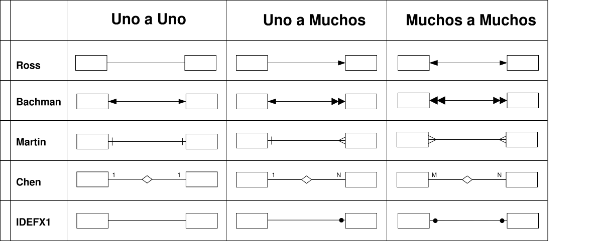
Las ocurrencias de una entidad pueden depender de una ocurrencia de otra entidad a través de una relación.
Las relaciones pueden ser FUERTES o DÉBILES según su dependencia.
Entidad fuerte es aquella que no depende de otra para que existan sus ocurrencias o instancias, y además dispone de una clave primaria que identifica cada una de esas instancias.
Entidad débil es aquella que depende de otra para que existan sus ocurrencias o elementos.
La dependencia en las entidades débiles puede ser de existencia o por identificación.
Dependencia de Existencia
Una entidad débil queda definida siempre a través de una relación especial que representa la dependencia de esta entidad de otra de orden superior (que puede ser a su vez una entidad fuerte o débil). Toda entidad débil tiene una dependencia en existencia de la entidad de orden superior, definiéndose entre ellas una jerarquía de dos niveles.
Una instancia de la entidad débil está vinculada a una instancia de la entidad de orden superior, de modo que no puede existir sin ella; es decir para existir la débil, debe existir previamente la de orden superior y si desaparece la instancia de orden superior, entonces deben desaparecer todas las instancias de la entidad débil que están vinculadas.
Ejemplo 13
Dependencia de existencia
En este ejemplo podemos afirmar que:
id_pedido), de modo que no pueden existir dos pedidos con el mismo identificador (id_pedido es el atributo que figura como clave primaria).Dependencia de Identificación
Existen algunas entidades débiles que no tienen suficientes atributos para garantizar la identificación o distinción de sus ocurrencias. En estos casos es necesario forzar el mecanismo de identificación de dicha entidad débil con la composición de atributos primarios de la entidad de orden superior y algunos atributos de la entidad débil. Una dependencia en identificación implica también una dependencia en existencia.
La dependencia en identificación se representa mediante una relación débil (rombo con línea doble) y una entidad débil (rectángulo con línea doble).
Ejemplo 14
Dependencia de Identificación
En este ejemplo, para poder identificar unívocamente las instancias de la entidad EJEMPLARES necesitamos el identificador de la entidad fuerte LIBROS (isbn) y el identificador de la entidad débil (numero), porque tenemos varios ejemplares con numero = 1, pero cada uno de ellos es de un libro diferente. El par de atributos <isbn, numero> sería capaz de identificar unívocamente todos los ejemplares de todos los libros.
El identificador (débil) de la entidad débil en la dependencia de identificación lo representamos mediante un óvalo.
Si eliminamos un libro desaparecen los ejemplares de ese libro, porque una dependencia en identificación implica también una dependencia en existencia.
A continuación vamos a ver como realizaríamos el esquema conceptual de un supuesto y cual es la secuencia de pasos a seguir.
🎓 Caso de estudio
El objetivo es registrar las mediciones tomadas por una red de estaciones meteorológicas.
El proceso para obtener un esquema conceptual del modelo Entidad-Relación consta de las siguientes etapas:
Descripción de las necesidades detectadas en el análisis
Deseamos disponer de base de datos que almacene la información sobre varias estaciones meteorológicas en una zona determinada.
De cada una de ellas recibiremos y almacenaremos un conjunto de datos cada día, que serán: temperatura máxima y mínima, precipitaciones en litros/, velocidad del viento máxima y mínima, y humedad máxima y mínima.
El sistema debe ser capaz de seleccionar, añadir o eliminar estaciones. Para cada una de ellas almacenaremos un identificador, su situación geográfica (latitud, longitud) y su altitud.
Identificar el conjunto de ENTIDADES
A primera vista, tenemos dos conjuntos de entidades: ESTACIONES y MUESTRAS.
Podríamos haber usado sólo un conjunto, el de las muestras, pero nos dicen que debemos ser capaces de seleccionar, añadir y borrar estaciones, de modo que parece que tendremos que usar un conjunto de entidades para ellas.
Identificar el conjunto de RELACIONES
En nuestro enunciado sólo detectamos una: cada estación estará interrelacionada con varias muestras, ya que cada día obtendremos una lectura. Será entonces una relación 1:N. Además, una estación puede no haber tomado ninguna muestra, por lo que su participación en la relación puede ser NULA; añadiremos el círculo junto a las estaciones.
Trazar el primer esquema
En el esquema inicial obviaremos los atributos de las entidades y relaciones. De momento sólo queremos reflejar las entidades y las relaciones que necesitamos.
Identificar ATRIBUTOS
Para las muestras tendremos que elegir los que nos da el enunciado: temperatura máxima y mínima, lluvia, velocidades del viento máxima y mínima y humedad máxima y mínima. Además hay que añadir la fecha de la muestra.
Para las estaciones también nos dicen qué atributos necesitamos: identificador, latitud, longitud y altitud.
Para identificar las claves primarias, buscaremos los atributos que pueden definir cada instancia de las entidades.
En el caso de las estaciones está bastante claro que debe ser el identificador (idReg), pero en el caso de las muestras no existen claves candidatas claras. De hecho, el conjunto total de atributos puede no ser único: dos estaciones próximas geográficamente, podrían dar los mismos datos para las mismas fechas.
Para solucionar este problema tenemos dos opciones:
En la segunda opción las muestras, como entidad débil, no tendrían una clave primaria, de hecho, esa clave, es decir, la forma de identificar una instancia de la entidad muestras, se forma con la unión de la clave primaria de la estación (idReg) y la fecha de la muestra (fechaDia).
Realizar el esquema completo
El último paso es crear el esquema entidad-relación a partir de toda la información necesaria que hemos deducido.
Además de los elementos que hemos estudiado, existen extensiones del modelo Entidad-Relación que incorporan determinados conceptos o mecanismos de abstracción para facilitar la representación de ciertas estructuras del mundo real:
En los ejercicios sólo usaremos la Generalización/Especialización para poder especificar atributos de una entidad según su subtipo.
Ejemplo 1
Una empresa de alquiler de vehículos desea almacenar información de su flota. Para ello decide informatizar sobre los VEHICULOS su matrícula, marca, modelo y peso, pero además para los COCHES queremos saber su clase (deportivo, berlina, monovolumen, todocamino, todoterreno), para los CAMIONES la máxima carga permitida (maxCarga) y para los AUTOBUSES el máximo número de personas que pueden llevar (maxPersonas).
Es posible ver la representación de la generalización de esta otra forma:
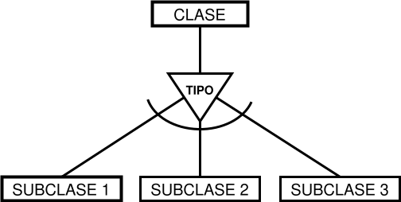
Incluso algunos diseñadores lo indican hasta con cardinalidad como se ve en el siguiente ejemplo.
Ejemplo 2
Una empresa almacena los datos de sus empleados en un Sistema Informatizado. Un empleado está contratado como Arquitecto, Administrativo o Ingeniero, por lo que tiene uno de estos tres trabajos (dependencia de la generalización 1,1 obligatoria) pero está claro que no tiene por qué estar contratado con los 3 roles, es decir, que si está como Arquitecto no tiene por qué estar también como Ingeniero (dependencia de la generalización 0,1 opcional).
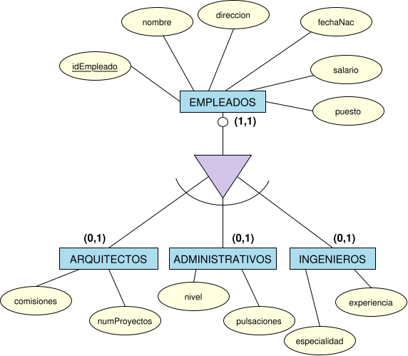
El modelo entidad-relación es un modelo conceptual que sirve para cualquier tipo de SGBD, en cambio, el modelo relacional es un modelo lógico que sólo sirve para SGBD relacionales.
Todos los diseñadores y administradores de bases de datos relacionales usan esquemas conceptuales entidad-relación porque se adaptan muy bien a este modelo.
Hay que tener en cuenta la diferencia de la palabra relación en ambos modelos. En el modelo relacional una relación es una tabla mientras que en el entidad/relación es la asociación que se produce entre dos entidades.
Según el modelo relacional el elemento fundamental es lo que se conoce como relación, aunque más habitualmente se le llama tabla. Se trata de una estructura formada por filas y columnas que almacena los datos referentes a una determinada entidad o relación del mundo real.
Acerca de una tabla, además de su nombre, podemos distinguir lo siguiente:
Atributo
Representa una propiedad que posee esa tabla. Equivale al atributo del modelo E-R. Se corresponde con la idea de campo o columna.
Tupla o Registro
Cada una de las filas de la tabla. Se corresponde con la idea de registro. Representa por tanto cada elemento individual (ejemplar, ocurrencia) de esa tabla.
Dominio
Un dominio contiene todos los posibles valores que puede tomar un determinado atributo. Dos atributos distintos pueden tener el mismo dominio. Un domino en realidad es un subconjunto de valores del mismo tipo. Los dominios poseen un nombre para poder referirnos a él y así poder ser reutilizable en más de un atributo.
Distinguiremos dos tipos de claves:
Clave candidata
Conjunto de atributos que identifican unívocamente cada registro de la relación. Es decir columnas cuyos valores no se repiten para esa tabla. Las claves candidatas pueden ser:
Clave externa, ajena o foránea
Atributo cuyos valores coinciden con una clave candidata (normalmente primaria) de otra tabla.
Una restricción es una condición de obligado cumplimiento por los datos de la base de datos. Las hay de varios tipos.
Aquellas que son definidas por el hecho de que la base de datos sea relacional:
Aquellas que son incorporadas por los usuarios:
Clave primaria (primary key)
Hace que los atributos marcados como clave primaria no puedan repetir valores. Además obliga a que esos atributos no puedan estar vacíos. Si la clave primaria la forman varios atributos, ninguno de ellos podrá estar vacío.
Unicidad (unique)
Impide que los valores de los atributos marcados de esa forma, puedan repetirse. Esta restricción debe indicarse en todas las claves alternativas.
Obligatoriedad (not null)
Prohíbe que el atributo marcado de esta forma no tenga ningún valor (es decir impide que pueda contener el valor nulo, null).
Integridad referencial (foreign key)
Sirve para indicar una clave externa. Cuando una clave se marca con integridad referencial, no se podrán introducir valores que no estén incluidos en los campos relacionados con esa clave.
La integridad referencial causa problemas en las operaciones de borrado y modificación de registros, ya que si se ejecutan esas operaciones sobre la tabla principal quedarán filas en la tabla secundaria con la clave externa sin integridad.
Esto se puede solucionar agregando las siguientes cláusulas:
NULL a las claves foráneas con el mismo valor.El modelo lógico-relacional está constituido por una serie de elementos llamados relaciones o tablas. Estos elementos los podemos representar de forma textual o gráficamente. Independientemente del tipo de representación elegida, necesitamos diferenciar de alguna forma los atributos que son clave principal, claves foráneas y atributos convencionales.
La sintaxis general para la representación textual es la siguiente:
TABLA(atributo 1, atributo 2, . . . , atributo n)
Para diferenciar los diferentes tipos de atributos utilizaremos la negrita y cursiva para las claves primarias y el resaltado en amarillo para las claves foráneas. Para indicar a que tablas referencian las claves foráneas podemos utilizar cualquiera de estas dos opciones de nomenclatura:
Opción 1
TABLA(. . . , TABLA_REFERENCIADA.clave-primaria, . . .)
Opción 2
TABLA(. . . , nombre-arbitrario, . . .)
CF: nombre-arbitario TABLA_REFERENCIADA
Durante el curso utilizaremos preferentemente la segunda opción.
Ejemplo 1
A continuación se muestra el modelo lógico-relacional equivalente al modelo entidad-relación mostrado en la imagen.
Modelo lógico-relacional
DEPARTAMENTOS(codigo, nombre)
EMPLEADOS(dni, nombre, departamento)
CF: departamento DEPARTAMENTOS
Con la nomenclatura alternativa sería así:
DEPARTAMENTOS(codigo, nombre)
EMPLEADOS(dni, nombre, DEPARTAMENTOS.codigo)
En las representaciones gráficas las tablas se representan con cajas rectangulares donde aparece el nombre de la tabla y sus atributos. Su sintaxis general es la siguiente:
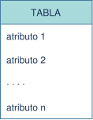
Hay muchas variantes por lo que respecta a la representación gráfica del modelo lógico-relacional. Nosotros utilizaremos el siguiente convenio:
Ejemplo 2
En este ejemplo obtenemos la representación del esquema lógico-relacional del ejemplo anterior.
Los ejemplos vistos muestran como es la representación del modelo lógico-relacional sin explicar como se obtiene. En la siguiente sección vamos a ver como se obtiene el modelo lógico-relacional a partir del modelo entidad-relación.
Previo a la aplicación de las reglas de transformación de esquemas entidad-relación a esquemas relacionales hay que eliminar ciertas anomalías relacionadas con el tipo de atributos del modelo entidad-relación. El objetivo es obtener un modelo entidad-relación euivalente libre de estas anomalías. Concretamente hay que obtener un modelo entidad-relación sin:
Hay tres opciones posibles:
Sustituir el atributo multivaluado por un número finito de atributos monovaluados. Esta opción es bastante limitada y sólo la utilizaremos cuando la estimación del número máximo de valores que puede tener es pequeño.
Ejemplo 1
En el esquema tenemos el atributo multivaluado telefono. Vamos a suponer que como máximo ninguna persona tendrá más de 3 teleéfonos.
En el esquema transformado hemos sustituido el atributo multivaluado por 3 atributos simples: telefono1, telefono2 y telefono3.
Sustituir el atributo multivaluado por una entidad y relacionarlo con la entidad de procedencia mediante una relación 1:N con dependencia de existencia o de identificación. Se puede enriquecer la nueva entidad creada añadiendo más atributos si lo creemos conveniente.
Ejemplo 2
En el esquema tenemos el atributo multivaluado telefono. Pero esta vez vamos a suponer que una persona puede tener un número arbitrario de teleéfonos.
En el esquema transformado hemos sustituido el atributo multivaluado por la entidad débil TELEFONOS que depende de la entidad PERSONAS.
Crear una nueva entidad con los atributos multivaluados y relacionarlos mediante una relación M:N con la entidad de procedencia. Se puede enriquecer la nueva entidad creada añadiendo más atributos si lo creemos conveniente.
Ejemplo 3
En este ejemplo tenemos el atributo multivaluado aficiones y vamos a suponer que una pesona puede tener muchas aficiones.
En este caso se ha creado una nueva entidad llamada AFICIONES que hemos relacionado con PERSONAS. Además hemos definido un código para cada afición.
Todos los atributos compuestos deben ser descompuestos en atributos simples que quedan asociados a la misma entidad.
Si hay una jerarquía de atributos compuestos se comienza a sustituir por los atributos que sólo están formados por atributos simples. Se continua el proceso recurrentemente hasta que ya no haya más atributos compuestos.
Ejemplo 4
En el esquema tenemos el atributo compuesto direccion.
En el esquema transformado hemos sustituido el atributo compuesto direccion por los 3 atributos simples que tiene: calle, piso y puerta.
La eliminación de atributos calculados es inmediata; sólo hay que quitarlos. En cualquier caso se debe dejar constancia de que existe y como se calcula en el diccionario de datos de la base de datos creada.
Ejemplo 5
En el esquema tenemos el atributo calculado precioIVA.
Como el precio con IVA lo podemos calcular a partir del precio y el iva no necesitamos almacenarlo () podemos suprimirlo de nuestro modelo entidad-relación.
Después de realizar estas transformaciones pasamos a la transformación propiamente dicha del modelo entidad-relación al modelo lógico-relacional.
La transformación depende del grado y cardinalidad de las relaciones entre las entidades del modelo ER.
Es el caso más simple de todos. A la entidad del modelo ER le corresponde una tabla o relación del modelo LR cuyos atributos serán los atributos del modelo ER. La clave primaria del modelo LR será la que se corresponda con el atributo identificador del modelo ER.
Ejemplo 6
Esquema ER con una sola entidad.
El modelo LR correspondiente, utilizando la representación textual, seria el siguiente:
PERSONAS(dni, nombre, fechaNac)
El modelo LR correspondiente, utilizando la representación gráfica, seria el siguiente:
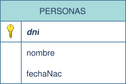
Relaciones binarias
El primer paso es transformar cada una de las entidades. A continuación se añade un nuevo atributo en la tabla correspondiente a la entidad del lado N de la relación. Ese atributo es una clave foránea que hará referencia a la tabla correspondiente a la entidad del lado 1 de la relación.
Ejemplo 7
El esquema ER modela la base de datos de los empleados de una empresa.
El esquema LR correspondiente sería el siguiente:
DEPARTAMENTOS(codigo, nombre)
EMPLEADOS(dni, nombre, departamento)
CF: departamento DEPARTAMENTOS
El mismo esquema LR pero representado gráficamente sería el siguiente:
A continuación veamos un ejemplo donde tenemos un cero.
Ejemplo 8
El esquema ER es el mismo que el del ejemplo anterior pero en este caso permitimos que haya empleados que no pertenezcan a ningún departamento.
El esquema LR correspondiente representado textualmente sería exactamente el mismo que en el ejemplo anterior.
DEPARTAMENTOS(codigo, nombre)
EMPLEADOS(dni, nombre, departamento)
CF: departamento DEPARTAMENTOS
Sin embargo esquema LR representado gráficamente difiere ligeramente del ejemplo anterior:
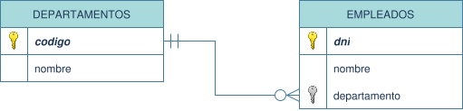
Este cero condicionará los valores que tomará el atributo departamento de la tabla EMPLEADOS y se tiene que tener en cuenta cuando se implemente la base de datos. En este caso el cero significa que está permitido un empleado sin departamento asignado.
En general los ceros no suelen tener trascendencia cuando pasamos al modelo LR. Normalmente sólo los tendremos en cuenta en las relaciones 1:1.
Relaciones reflexivas
Este tipo de relaciones las podemos considerar un caso particular de las relaciones binarias. Se procede igual que el caso de las binarias pero ahora las 2 entidades tienen el mismo nombre. Como al realizar la transformación tendremos dos tablas repetidas nos quedamos con la transformación que tiene más información y desechamos la otra.
A continuación veamos un ejemplo para aclarar los conceptos.
Ejemplo 9
Recuperamos el ejemplo de la relación reflexiva SER_JEFE entre EMPLEADOS.
Suponiendo que esta relación la podemos tratar como una relación binaria entre una entidad EMPLEADOS y otra entidad EMPLEADOS, podemos emplear la misma metodología vista para estas relaciones para llegar a el siguiente resultado intermedio:
EMPLEADOS(codigo, nombre, sueldo)
EMPLEADOS(dni, nombre, sueldo, jefe)
CF: jefe EMPLEADOS
Como la segunda tabla EMPLEADOS es la que tiene más información descartamos la primera tabla. Por lo tanto, el esquema LR resultante es:
EMPLEADOS(dni, nombre, sueldo, jefe)
CF: jefe EMPLEADOS
La representación gráfica del modelo LR sería:
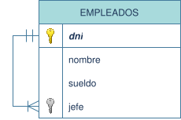
Las relciones 1:1 se pueden considerar un caso particular de las relaciones 1:N y por lo tanto se pueden aplicar ténicas análogas a las aplicadas a estas relaciones para obtener el esquema LR.
Para obtener el modelo LR designamos a unos de las dos entidades de la relacion como la del lado de la N. Esta designación no siempre puede ser arbitraria y está condicionada por los ceros de la relación.
Relaciones binarias
Cuando no tenemos ningún cero o bien dos ceros podemos elegir libremente que entidad actuará del lado de la N.
Ejemplo 10
Recuperamos el ejemplo de la relación 1:1 entre PAISES y BANDERAS.
En este caso podemos elegir que entidad actúa del lado de la N en la relación puesto que no tenemos ceros. Por lo tanto tenemos dos soluciones posibles igualmente válidas.
Solución 1
PAISES(codigo, nombre, poblacion)
BANDERAS(id, colores, pais)
CF: pais PAISES
El modelo LR equivalente representado gráficamente es:
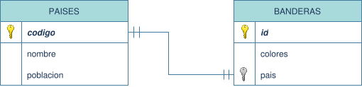
Solución 2
PAISES(codigo, nombre, poblacion, bandera)
CF: bandera BANDERAS
BANDERAS(id, colores)
El modelo LR equivalente representado gráficamente es:
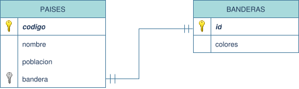
Cuando tenemos un sólo cero tenemos que elegir como entidad del lado de la N la que no tenga el cero.
Ejemplo 11
El siguiente ejemplo refleja las matriculaciones llevadas a cabo por los estudiantes en el presente año. Se supone que el alumno sólo se puede matricular de un curso.
En este caso MATRICULAS es la entidad que actúa del lado de la N.
ALUMNOS(dni, nombre, fechaNac)
MATRICULAS(id, estudios, grupo, alumno)
CF: alumno ALUMNOS
El modelo gráfico LR equivalente es:
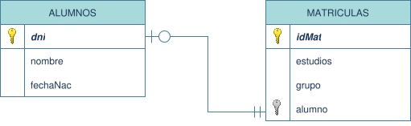
Relaciones reflexivas
Las mismas consideraciones que hemos hecho con las relaciones reflexivas para las relaciones 1:N las podemos aplicar para las relaciones 1:1. Además, también podemos aplicar el mismo tratamiento de los ceros que el caso de las relaciones binarias.
Ejemplo 12
El siguiente ejemplo pasa el paso a esquema LR del ejemplo de la relación gemelos.
El modelo LR textual equivalente es:
PERSONAS(dni, nombre, gemelo)
CF: gemelo PERSONAS
El modelo LR gráfico equivalente es:
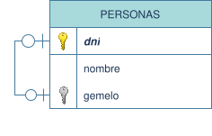
En este caso sólo vamos a considerar relaciones sin ceros ya que estos son irrelevantes al hacer el paso al modelo LR.
Relaciones binarias
El procedimeineto a seguir es el siguiente:
Ejemplo 13
Recuperamos el ejemplo del esquema ER de la universidad al cual le hemos añadido el atributo dedicacion.
El modelo LR textual equivalente es:
PROFESORES(dni, nombre)
PROYECTOS(codigo, titulo, descripcion)
TRABAJAR(profesor, proyecto, dedicacion)
CF: profesor PROFESORES
CF: proyecto PROYECTOS
El modelo LR gráfico equivalente es:
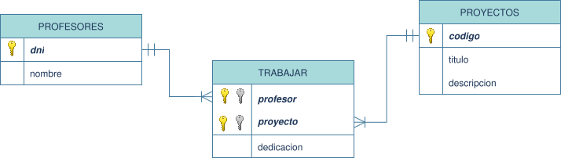
Relaciones reflexivas
Teniendo en cuenta que las relaciones reflexivas se pueden considerar como relaciones binarias de una entidad con una copia de ella misma y lo expuesto hasta ahora sobre las relaciones reflexivas podemos llevar a cabo la transformación del esquema ER al esquema LR.
Ejemplo 14
Recuperamos el ejemplo del esquema ER de la relación HERMANOS donde no hemos tenido en cuenta las cardinalidades mínimas.
El modelo LR textual equivalente es:
PERSONAS(dni, nombre)
HERMANOS(persona1, persona2)
CF: persona1 PERSONAS
CF: persona2 PERSONAS
El modelo LR gráfico equivalente es:
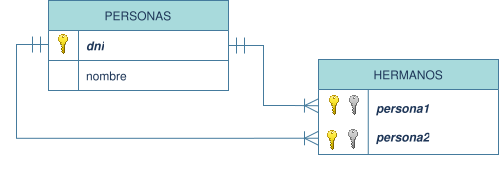
La transformación del esquema ER correspondiente a una relación de grado mayor que 2, y de grado 3 en particular, depende de la cardinalidad con la que interviene cada entidad en la relación. Así en el caso de las relaciones ternarias tenemos hasta 4 posibilidades que vamos a pasar a estudiar.
Relaciones M:N:P
El procedimiento a seguir para obtener el modelo LR es el siguiente:
Ejemplo 15
Recuperamos el ejemplo de la relación ternaria que nos da las notas de los alumnos en las asignaturas que cursan en un determinado periodo.
El modelo LR textual equivalente es:
ALUMNOS(dni, nombre)
ASIGNATURAS(idAsig, nombre, horas)
PERIODOS(codigo, descripcion)
EVALUAR(alumno, asignatura, periodo, nota)
CF: alumno ALUMNOS
CF: asignatura ASIGNATURAS
CF: periodo PERIODOS
El modelo LR gráfico equivalente es:
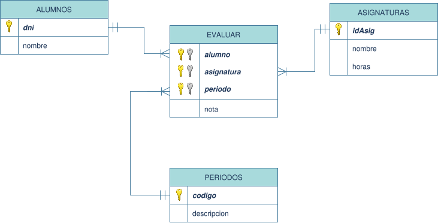
Relaciones M:N:1
El procedimiento a seguir para obtener el modelo LR es el mismo que el caso M:N:P salvo que la clave primaria de la nueva tabla está formada por la concatenación de las claves primarias de las entidades que intervienen con cardinalidad Muchos en el modelo ER.
Ejemplo 16
En este ejemplo tenemos un esquema ER que modela la afiliación de los socios a un club de manera que se contempla la posibilidad de que un socio se afilie a un club, se de de baja y posteriormente pueda volver a afiliarse al mismo club.
El modelo LR textual equivalente es:
SOCIOS(idSocio, nombre)
CLUBS(codigo, nombre, fechaFundacion)
FECHAS(fechaAlta)
AFILIARSE(socio, fecha, club, fechaBaja)
CF: socio SOCIOS
CF: fecha FECHAS
CF: club CLUBS
El modelo LR gráfico equivalente es:
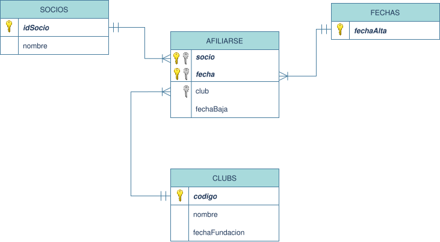
Relaciones N:1:1
El procedimiento a seguir para obtener el modelo LR es similar al caso M:N:1 salvo que la clave primaria de la nueva tabla está formada por la concatenación de la clave primaria de la entidad que interviene con cardinalidad N y otra cualquiera de las claves primarias que intervienen con cardinalidad 1. En este caso tenemos 2 soluciones posibles igualemente válidas.
Ejemplo 17
El esquema corresponde al supuesto del concesionario de coches visto anteriormente ligeramente modificado.
Solución 1
El modelo LR textual es:
COCHES(bastidor, modelo)
EMPLEADOS(dni, nombre)
CLIENTES(idCliente, nombre)
VENDER(coche, empleado, cliente, matricula)
CF: coche COCHES
CF: empleado EMPLEADOS
CF: cliente CLIENTES
El modelo LR gráfico equivalente es:
Solución 2
El modelo LR textual es:
COCHES(bastidor, modelo)
EMPLEADOS(dni, nombre)
CLIENTES(idCliente, nombre)
VENDER(coche, cliente, empleado, matricula)
CF: coche COCHES
CF: cliente CLIENTES
CF: empleado EMPLEADOS
El modelo LR gráfico equivalente es:
Relaciones N:1:1
El procedimiento a seguir para obtener el modelo LR es similar al anterior. Como ahora no hay entidades que intervienen en la relación con cardinalidad Muchos, la clave primaria está formada por la concatenación de las claves primarias correspondientes a 2 entidades cualesquiera que intervengan en la relación. En este caso tenemos 3 soluciones posibles igualemente válidas.
Ejemplo 18
El esquema corresponde a un supuesto de defensa del proyecto de fin de grado ante un tribunal por parte de los alumnos de la universidad.
Solución 1
El modelo LR textual es:
ESTUDIANTES(dni, nombre)
TRIBUNALES(codigo, especialidad)
PROYECTOS(codigo, titulo)
DEFENDER(estudiante, tribunal, proyecto, fechaDefensa)
CF: estudiante ESTUDIANTES
CF: tribunal TRIBUNALES
CF: proyecto PROYECTOS
El modelo LR gráfico equivalente es:
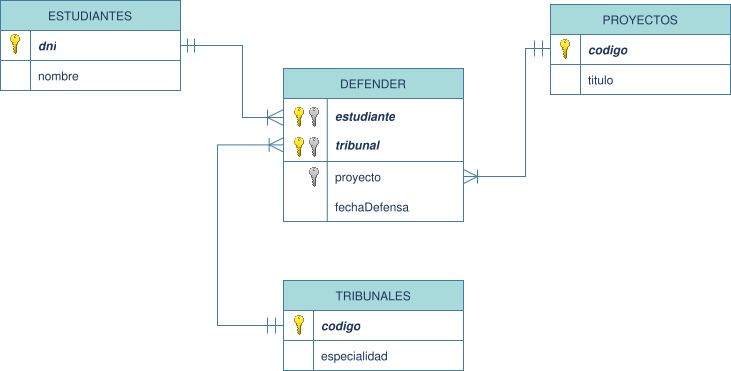
Solución 2
El modelo LR textual es:
ESTUDIANTES(dni, nombre)
TRIBUNALES(codigo, especialidad)
PROYECTOS(codigo, titulo)
DEFENDER(estudiante, proyecto, tribunal, fechaDefensa)
CF: estudiante ESTUDIANTES
CF: proyecto PROYECTOS
CF: tribunal TRIBUNALES
El modelo LR gráfico equivalente es:
Solución 3
El modelo LR textual es:
ESTUDIANTES(dni, nombre)
TRIBUNALES(codigo, especialidad)
PROYECTOS(codigo, titulo)
DEFENDER(tribunal, proyecto, estudiante, fechaDefensa)
CF: tribunal TRIBUNALES
CF: proyecto PROYECTOS
CF: estudiante ESTUDIANTES
El modelo LR gráfico equivalente es:
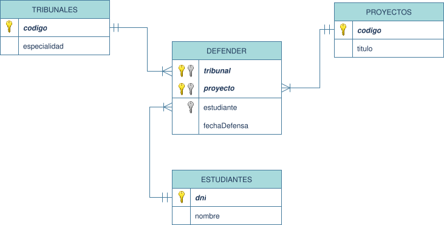
Transformación de relaciones de grado > 2
La regla general para transformar a modelo LR cualquier relación en el modelo ER de grado mayor que 2 sigue las siguientes reglas:
Transformar a modelo LR cada una de las entidades intervinientes en la relación.
Crear una nueva tabla que se corresponderá con la relación del esquema ER. Esta tabla tendrá tantos atributos como entidades intervengan en la relación más los atributos propios de la relación.
Cada uno de los atributos representantes de las entidades de la relación será una clave foránea que hará referencia a la entidad representada.
La clave primaria de la nueva tabla tiene que cumplir las siguientes condiciones:
Por lo tanto, la clave primaria está formada por la concatenación de n atributos o n - 1.
En el caso de la dependencia de existencia la transformación ed idéntica a la vista para las relaciones 1:N.
En el caso de la dependencia de identificación se procede de la siguiente manera:
Ejemplo 14
Recuperamos el ejemplo correspondiente a los LIBROS y EJEMPLARES visto anteriormente.
El modelo LR textual es:
LIBROS(isbn, titulo)
EJEMPLARES(libro, numero)
CF: libro LIBROS
El modelo LR gráfico equivalente es:
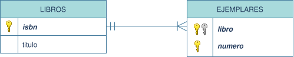
La relación de Generalización/Especialización se puede ver como una serie de relaciones 1:1 entre cada subtipo y el supertipo de la relación.
El proceso a seguir para obtener el modelo LR es el siguiente:
Ejemplo 15
Recuperamos el ejemplo correspondiente a los vehículos y sus diferentes tipos que hemos visto anteriormente.
El modelo LR textual es:
VEHICULOS(matricula, marca, modelo, peso)
COCHES(vehiculo, clase)
CF: vehiculo VEHICULOS
CAMIONES(vehiculo, maxCarga)
CF: vehiculo VEHICULOS
AUTOBUSES(vehiculo, maxPersonas)
CF: vehiculo VEHICULOS
El modelo LR gráfico equivalente es:
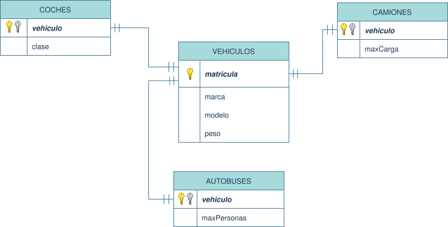
La normalización es una técnica que busca dar eficiencia y fiabilidad a una BD relacional. Su objetivo es, por un lado, llevar la información a una estructura donde prime el aprovechamiento del espacio; y por otro lado, que el manejo de la información pueda llevarse a cabo de forma rápida.
Cuando realizamos un diseño en el modelo relacional existen diferentes alternativas, pudiéndose obtener diferentes esquemas relacionales. No todos ellos serán equivalentes y unos representarán mejor la información que otros.
Las tablas obtenidas pueden presentar los siguientes problemas:
La normalización nos permite eliminar estos problemas, forzando a la división de una tabla en dos o más.
Para comprender bien las formas normales es necesario identificar lo que significa dependencia funcional:
Se dice que existe dependencia funcional entre dos atributos de una tabla si para cada valor del primer atributo existe un sólo valor del segundo.
Las formas normales se corresponden a una teoría de normalización iniciada por Edgar F. Codd y continuada por otros autores (entre los que destacan Boyce y Fagin). Codd definió en 1970 la primera forma normal. Desde ese momento aparecieron la segunda, tercera, la Boyce-Codd, la cuarta y la quinta forma normal. En este documento sólo consideraremos las tres primeras formas normales.
Una tabla puede encontrarse en primera forma normal y no en segunda forma normal, pero no al contrario. Es decir los números altos de formas normales son más restrictivos.
Primera forma normal (1FN)
Es una forma normal inherente al esquema relacional, por lo que su cumplimiento es obligatorio; es decir toda tabla realmente relacional la cumple. Se dice que una tabla se encuentra en primera forma normal si impide que un atributo de un registro pueda tomar más de un valor simultáneamente. Para resolver este problema simplemente se descomponen aquellos registros en los que los atributos tienen más de un valor en tantos registros como valores haya, cada una con un valor.
Ejemplo 1
La siguiente relación no cumple la primera forma normal:
Para resolver este problema dividimos el registro correspondiente al trabajador David en dos registros en los cuales sólo hay un único valor del Departamento.
La siguiente relación sí cumple la primera forma normal:
Segunda forma normal (2FN)
Ocurre si una tabla está en primera forma normal (1FN) y además cada atributo que no sea clave, depende de forma funcional completa respecto de cualquiera de las partes de la clave. Toda la clave principal debe hacer dependientes al resto de atributos, si hay atributos que dependen sólo de parte de la clave, entonces esa parte de la clave y esos atributos formarán otra tabla.
Ejemplo 2
En este ejemplo suponemos que el DNI y el código de curso forman la clave principal para la tabla dada.
Sólo la nota tiene dependencia funcional completa. El nombre depende de forma completa del DNI y por lo tanto la tabla no satisface la segunda forma normal (no es 2FN).
Para arreglarlo separamos la tabla en dos:
Tercera forma normal (3FN)
Ocurre cuando una tabla está en segunda forma normal (2FN) y además ningún atributo que no sea clave depende funcionalmente de forma transitiva de la clave primaria. Cuando una tabla no está en terera forma normal y ahí se llevan los atributos dependientes y el atributo del que dependen. Esta tabla tiene que seguir enlazada con la tabla original.
Ejemplo 3
En este ejemplo no se cumple la 3FN puesto que la provincia depende funcionalmente del código de provincia y a su vez este depende fucionalmente del DNI.
La solución es dividir en dos tablas. La segunda tabla contendrá el código d provincia y la provincia. En la primera tabla hemos eliminado la columna provincia ya que es la causante del incumplimeinto de la 3FN.